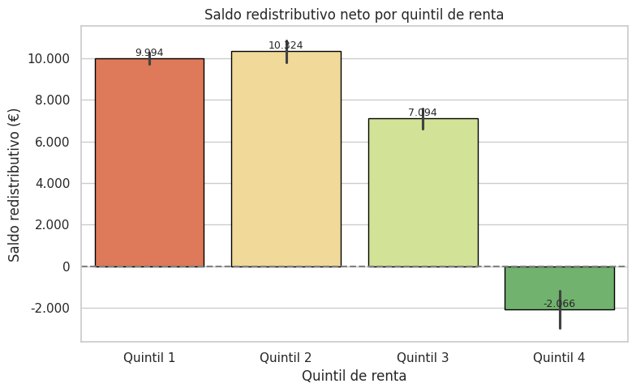

PRÁCTICA 2 Visualización de Datos
Jorge Moreno Fuentes
Introducción
Este proyecto de visualización de datos tiene como objetivo explorar de forma visual y argumentada cómo funcionan las cuentas públicas en España desde una perspectiva redistributiva. A partir de la combinación de datos del Instituto Nacional de Estadística (INE) y del Observatorio sobre el Impacto Redistributivo del Sistema Fiscal en España (Fundación FEDEA), se han desarrollado una serie de visualizaciones que permiten responder de forma clara a preguntas clave como: ¿quién genera la renta? ¿quién recibe prestaciones públicas? ¿quién paga impuestos? y ¿cómo varía todo esto según el grupo de edad, el tipo de hogar o el nivel de renta?
El proyecto no solo busca mostrar resultados, sino contar una historia con los datos. A través de un proceso de limpieza, integración y análisis de distintos conjuntos de datos demográficos y fiscales, se ha construido una narrativa estructurada que permite al usuario interpretar los datos desde distintos ángulos. Se han empleado herramientas como Python, pandas, seaborn y matplotlib para realizar gráficos claros, comparables y con una estética coherente, que se adaptan tanto a públicos especializados como a audiencias no técnicas.
Este trabajo no se limita a visualizar información. Persigue también demostrar el potencial de la visualización como herramienta de análisis económico y social, facilitando una mejor comprensión del impacto que tiene el sistema de impuestos y prestaciones sobre distintos perfiles sociales. Cada gráfico ha sido diseñado con una intención específica, atendiendo al tipo de variable representada, la escala adecuada y los principios de legibilidad y precisión.
El conjunto de visualizaciones se ha acompañado de decisiones de diseño conscientes, tanto técnicas como narrativas, orientadas a que el lector no solo vea los datos, sino que los entienda y los cuestione. Esta es una propuesta comprometida con la claridad, la transparencia y la accesibilidad como pilares del análisis de datos públicos.
Conjunto de datos preparados tras PR1
El proyecto se basa en dos fuentes de datos complementarias que permiten analizar el sistema redistributivo español desde una perspectiva multidimensional: por nivel de renta, edad, tipo de hogar y otros factores demográficos.
Por un lado, se ha utilizado el archivo procedente del Observatorio sobre el Impacto Redistributivo del Sistema Fiscal en España (Fundación FEDEA), que proporciona datos anonimizados sobre ingresos de mercado, impuestos, prestaciones monetarias y en especie, así como desglose por tipo de impuesto (IRPF, IVA, cotizaciones sociales, etc.). Este conjunto incluye información agrupada por quintiles de renta, tramos de edad, tipos de hogar y otras categorías sociales, con datos disponibles para los años 2021 y 2022.
Por otro lado, se ha incorporado información del Instituto Nacional de Estadística (INE), con foco en la renta media por unidad de consumo según edad y sexo. Este segundo conjunto de datos permite contextualizar la información fiscal con datos representativos de renta desde una fuente oficial independiente, y sirve como complemento para validar tendencias y realizar cruces de información entre variables demográficas y económicas.
Ambos datasets requerían un proceso intensivo de limpieza y preparación antes de poder ser utilizados. En primer lugar, los archivos originales estaban estructurados en múltiples hojas de Excel y presentaban problemas de formato, celdas fusionadas y valores no numéricos. Fue necesario estandarizar los nombres de las variables, convertir columnas a formato numérico y agrupar valores por categorías comunes. Además, se identificaron y eliminaron filas duplicadas, valores inconsistentes y etiquetas heterogéneas en los nombres de los grupos demográficos. También se fusionaron distintas hojas en un único archivo consolidado que facilita el análisis conjunto.
Este proceso de depuración y transformación permitió integrar ambas fuentes en un modelo coherente, con variables alineadas y listas para la visualización. Gracias a este trabajo previo, fue posible generar gráficos fiables y comparables, con una base sólida para la exploración de las preguntas planteadas.
Pregunta 1: ¿Quién genera la renta?
El análisis de la generación de renta en España requiere observar tanto los ingresos obtenidos en el mercado como la evolución que estos presentan en el tiempo. Para ello, hemos explorado múltiples variables: desde los ingresos según tipo de hogar o quintil de renta, hasta el comportamiento agregado por edad. A través de los siguientes gráficos, se identifican los perfiles que más contribuyen a la generación de riqueza, así como su evolución en términos de renta de mercado y renta disponible.

Gráfico 1.1:Este gráfico compara dos indicadores clave por tipo de hogar: la renta disponible y el saldo redistributivo.Observamos que las parejas sin hijos y las personas en hogares dobles sin hijos son quienes presentan mayor renta disponible. En el extremo opuesto, los hogares monoparentales y las personas solas muestran niveles bajos de renta disponible y un saldo redistributivo positivo, lo que indica que reciben más de lo que aportan, fiscalmente hablando. Este gráfico pone de manifiesto las desigualdades estructurales según forma de convivencia. Las parejas sin hijos y los hogares dobles sin hijos son los que presentan mayor renta disponible, mientras que los hogares monoparentales y personas solas tienen un saldo fiscal positivo: reciben más de lo que aportan.
Gráfico 1.2:Barras que muestran el saldo fiscal neto por quintil de renta. El gráfico muestra una clara progresividad: los quintiles más altos son contribuyentes netos (saldo negativo), mientras que los más bajos son receptores netos (saldo positivo). El quinto quintil destaca con un saldo fuertemente negativo, evidenciando su papel central en la financiación del Estado del bienestar.. La progresividad fiscal se muestra con claridad: los quintiles bajos reciben más de lo que aportan y los altos son contribuyentes netos.

Gráfico 1.3:Líneas comparativas por quintil entre renta de mercado ampliada y renta disponible. Se confirma que todos los grupos aumentaron ligeramente su renta de mercado entre 2021 y 2022. Sin embargo, la renta disponible muestra incrementos más suaves, especialmente en los quintiles bajos. Esto sugiere que el sistema redistributivo actúa como amortiguador, pero no necesariamente amplifica el crecimiento en los tramos más vulnerables.. Aunque todos los quintiles mejoran su renta de mercado en 2022, la renta disponible crece menos, lo que indica el papel estabilizador del sistema redistributivo.
Gráfico 1.4:. Líneas de renta media desglosadas por grupo de edad y sexo, según el INE. El patrón vital es claro: la renta crece hasta los 50 años y desciende tras la jubilación. La brecha de género se mantiene constante en casi todos los tramos, con los hombres superando sistemáticamente a las mujeres. Este gráfico ofrece contexto demográfico para comprender la base de la renta de mercado.Según datos del INE, la renta media crece con la edad hasta los 50 años y después cae. Hay brecha de género persistente.
Gráfico 1.5:Comparativa entre renta disponible y saldo redistributivo según edad. El sistema fiscal y de prestaciones cumple su rol redistributivo claramente: los jóvenes y los mayores reciben más de lo que aportan, mientras que los adultos en edad laboral (30–60 años) son los principales financiadores. Este gráfico permite visualizar cómo el ciclo de vida económico de las personas se alinea con el diseño del Estado del bienestar.. La redistribución fiscal sigue un patrón de ciclo vital: los jóvenes y mayores reciben más, los adultos en edad laboral son contribuyentes netos.
Conclusión
La generación de renta en España está fuertemente ligada a la edad y al tipo de hogar. Los hogares con mayor estabilidad y doble ingreso generan más renta disponible, mientras que el sistema redistributivo favorece a los perfiles más vulnerables. El análisis evolutivo revela que, si bien la renta crece en todos los quintiles, su distribución final depende en gran medida de las transferencias y del diseño fiscal. La visualización permite ver no solo cuánto se gana, sino también quién sostiene el sistema y quién se beneficia de su redistribución.
Pregunta 2: ¿Quién recibe prestaciones?
La segunda pregunta del análisis se centra en el papel redistributivo del Estado a través de las prestaciones públicas. Para abordarla, hemos analizado tanto las prestaciones monetarias (como las pensiones o subsidios directos) como las prestaciones en especie (como sanidad y educación), observando su distribución según edad, nivel de renta y tipo de hogar. Las siguientes visualizaciones permiten comprender a quién benefician más estas transferencias, cómo varían a lo largo del ciclo vital y si su peso relativo se ha modificado entre los años 2021 y 2022.

Gráfico 2.1:Gráfico de barras apiladas que descompone el total de prestaciones en tres categorías: monetarias, sanidad y educación. Se observa una clara lógica vital: los jóvenes reciben más en educación, los adultos activos menos en general, y los mayores concentran el grueso de las prestaciones monetarias (pensiones) y en especie (sanidad). La transición entre los 50 y 65 años marca un punto de inflexión en la distribución. La distribución de prestaciones responde a una lógica de ciclo vital: los jóvenes reciben más educación, los mayores sanidad y pensiones.
Gráfico 2.2: Gráfico apilado que muestra cómo se compone el ingreso final (disponible además de prestaciones) por nivel de renta. El ingreso final de los quintiles más bajos depende en mucha mayor medida de las prestaciones públicas, especialmente las monetarias. A medida que aumenta la renta de mercado, el peso relativo de las transferencias disminuye, mostrando la orientación progresiva del sistema. Los quintiles bajos dependen mucho más de las prestaciones, mientras que los altos las reciben en menor proporción.
Gráfico 2.3:Este gráfico refuerza visualmente la desigual distribución de prestaciones. El salto en las transferencias monetarias entre los tramos "50–65" y "65–85" refleja el paso a la jubilación y la magnitud del gasto público en pensiones. La desagregación con cifras permite observar el peso real de cada tipo de prestación por edad. Destaca el salto a partir de la jubilación.
Gráfico 2.4: Vemos las líneas de evolución temporal para cada quintil y tipo de prestación. Todos los quintiles experimentan un ligero aumento de las prestaciones entre 2021 y 2022, tanto monetarias como en especie. Sin embargo, el crecimiento relativo es más pronunciado en los tramos intermedios, lo que sugiere una estabilización del sistema tras el contexto pandémico.
Gráfico 2.5:Gráfico apilado que descompone el gasto redistributivo en tres componentes según nivel de renta. Aunque todos los quintiles reciben los tres tipos de prestaciones, el peso de las pensiones aumenta significativamente con la renta, mientras que la educación tiene más protagonismo en los tramos bajos. Esto se alinea con la estructura demográfica de los distintos quintiles y sus necesidades.El gasto redistributivo cambia según renta: más pensiones en los quintiles altos, más educación en los bajos.
Conclusión
El sistema de prestaciones español muestra un patrón redistributivo estructurado: transfiere más recursos a quienes tienen menos renta o se encuentran en etapas vitales vulnerables. Las prestaciones monetarias son esenciales para los quintiles bajos, mientras que las en especie (sanidad y educación) complementan la intervención del Estado con lógica demográfica. La evolución temporal demuestra una cierta estabilidad, con leves mejoras, lo que sugiere que el sistema ha resistido con solidez a las tensiones recientes.
Pregunta 3: ¿Quién paga impuestos?
La tercera pregunta busca identificar los perfiles que más contribuyen al sostenimiento del Estado del bienestar a través de los impuestos. Para ello, se han analizado distintos tipos de tributos (directos, indirectos, cotizaciones) y su distribución según nivel de renta, grupo demográfico, tipo de hogar y evolución temporal. A través de varias visualizaciones, se puede observar tanto la carga fiscal absoluta como la relación entre renta e impuestos, así como los cambios entre 2021 y 2022.
Gráfico 3.1:Gráfico de barras apiladas por grupo demográfico, que muestra el total de impuestos pagados desglosado por tipo. La aportación es claramente desigual. Los grupos de renta más alta (centil 100 y percentiles 91–99) soportan la mayor parte del IRPF, el impuesto de sociedades y las cotizaciones empresariales. En cambio, los hogares medios y bajos aportan sobre todo a través del IVA y cotizaciones como trabajadores. El sistema muestra una estructura progresiva, pero no homogénea.
Gráfico 3.2: Diagrama de dispersión con eje logarítmico, que relaciona renta de mercado e impuestos totales por grupo. Se observa una relación ascendente clara: a mayor renta, mayor carga fiscal. El uso de escala logarítmica permite apreciar mejor los patrones entre grupos intermedios y altos, mostrando que la progresividad se mantiene, aunque con cierta dispersión entre perfiles similares.
Gráfico 3.3: Gráfico de líneas con escala logarítmica en eje Y, que muestra la evolución del impuesto medio entre años para múltiples grupos. En casi todos los grupos, los impuestos medios aumentaron entre 2021 y 2022. Los cambios fueron más notables en los percentiles altos y en algunos hogares tipo “pareja con hijos”, lo que podría indicar un leve ajuste redistributivo tras la pandemia. La escala logarítmica facilita distinguir variaciones incluso entre grupos muy diferentes en volumen.
Gráfico 3.4: Gráfico de barras horizontales que muestra el impuesto total medio pagado por cada tipo de hogar. Las parejas con hijos, los hogares dobles sin hijos y los “otros hogares” encabezan la lista de los que más contribuyen. Los hogares monoparentales y las personas solas pagan significativamente menos. Este gráfico refuerza la idea de que el tipo de hogar condiciona no solo la renta, sino también la contribución fiscal.
Conclusión
La estructura fiscal española es progresiva en su diseño, pero su funcionamiento efectivo depende de varios factores demográficos y laborales. Los hogares con mayor renta o doble ingreso asumen más carga fiscal, tanto por IRPF como por cotizaciones. Sin embargo, la existencia de tributos regresivos como el IVA y la concentración de aportaciones en determinados perfiles evidencian áreas de posible mejora. Las visualizaciones ayudan a comprender que no todos los grupos contribuyen del mismo modo, ni por los mismos canales.